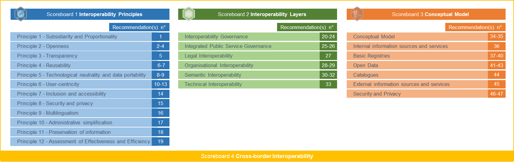

Spain
Table of Contents
Digital Public Administration factsheet 2023
1 Interoperability State-of-Play 4
2 Digital Public Administration Political Communications 8
3 Digital Public Administration Legislation 16
4 Digital Public Administration Infrastructure 24
5 Digital Public Administration Governance 37
6 Cross-border Digital Public Administration Services for Citizens and Businesses 42
1
Interoperability State-of-Play
Interoperability State-of-Play
In 2017, the European Commission published the European Interoperability Framework (EIF) to give specific guidance on how to set up interoperable digital public services through a set of 47 recommendations divided in three pillars. The EIF Monitoring Mechanism (MM) was built on these pillars to evaluate the level of implementation of the framework within the Member States. Whereas during the previous, the MM relied upon three scoreboards, the 2022 edition includes an additional scoreboard on cross-border interoperability, assessing the level of implementation of 35 Recommendations. The mechanism is based on a set of 91 Key Performance Indicators (KPIs) clustered within the four scoreboards (Principles, Layers, Conceptual model and Cross-border interoperability), outlined below.

Source: European Interoperability Framework Monitoring Mechanism 2022
Each scoreboard breaks down the results into thematic areas (i.e. principles). The thematic areas are evaluated on a scale from one to four, where one means a lower level of implementation and four means a higher level of implementation. The graphs below show the result of the EIF MM data collection exercise for Spain in 2022, comparing it with the EU average as well as the performance of the country in 2021.
Source: European Interoperability Framework Monitoring Mechanism 2022
Spain’s results in Scoreboard 1 show an overall high implementation of the EIF Principles, scoring above the European average for Principle 1 (Subsidiarity and Proportionality), 7 (Inclusion and Accessibility), 9 (Multilingualism), and 12 (Assessment of Effectiveness and Efficiency). It is interesting to notice that the score related to Principle 12 improved from the previous year. In order to further enhance the implementation of the EIF Principles, the country could consider improving the extent to which the five major Base Registries (Population, Vehicle, Tax, Land, Business) are available for reuse in digital public services (Recommendation 26).
Source: European Interoperability Framework Monitoring Mechanism 2022
The Spanish results for the implementation of the interoperability layers assessed for Scoreboard 2 show an overall good performance with all layers scoring the maximum of 4. In order to keep achieving a high score, the country should focus on using ICT catalogues (Recommendation 23) as well as further enhancing the extent to which organisational relationships between providers and consumers are formalised (Recommendation 26).
Source: European Interoperability Framework Monitoring Mechanism 2022
Spain’s scores assessing the Conceptual Model in Scoreboard 3 show an excellent performance in the implementation of all recommendations with scores of 4 in all areas. Concretely, Spain performs above the EU average in the areas of Catalogues, External information sources and services, and Security and Privacy. However, some improvements can be made in implementing recommendations related to the Base registries approach. Precisely, the score of 3 on the availability of authoritative sources of information and the use of control mechanisms to ensure security and privacy in accordance with the relevant legislation (Recommendation 37) and on the development of interfaces with base registries and authoritative sources of information (Recommendation 38) could be improved to reach the maximum score of 4.
Source: European Interoperability Framework Monitoring Mechanism 2022
The results of Spain concerning Cross-border interoperability in Scoreboard 4 show a high performance of the country in 18 indicators. Particularly, Spain has a high performance above the EU average in most indicators, with the exception of Principle 10 (Administrative simplification). Some margin for improvement exists in relation to this Principle and the country should focus on simplifying processes and use digital channels whenever appropriate for the delivery of European public services, in particular eID (Recommendation 80).
Additional information on Spain’s results on the EIF Monitoring Mechanism is available online through interactive dashboards.
Curious about the state-of-play on digital public administrations in this country? Please find here some relevant indicators and resources on this topic: |

2
Digital Public Administration Political Communications
Digital Public Administration Political Communications
Specific Political Communications on Digital Public Administration
Digital Spain 2026
In July 2020, the Spanish government presented a plan called ‘Digital Spain 2025’, subsequently updated with ‘Digital Spain 2026’,to boost digital transformation and leverage economic growth, social equity, productivity and all the opportunities that new technologies offer. The strategy involves different measures, reforms and investments, articulated around ten strategic areas (aligned with the European Commission’s strategy). The overall goal of the strategy is to ensure that the benefits of the digital and ecological transition reach the whole society.
Digital Spain 2026 is the update of the strategy launched in July 2020. This agenda consists of nearly 50 measures articulated around ten strategic axes and classified into three dimensions: infrastructure and technology, economy and people.
It adds two new transversal axes referring to the Strategic Projects for Economic Recovery and Transformation (PERTE) and the RETECH initiative. The former consists of promoting large projects with the capacity to drive economic growth, employment and the competitiveness of the Spanish economy. The latter, called RETECH, includes a series of transformative strategic projects in the digital area proposed by the autonomous communities. It will receive additional financing from the general State administration and territorial administrations.
Public Administrations Digitisation Plan 2021–2025
On 28 January 2021, the Spanish government presented the Public Administration Digitisation Plan, which is part of the higher-level strategy Digital Spain 2025 and the 11th component of Spain’s Recovery, Transformation and Resilience Plan. The plan will be supported with a public investment of EUR 2.6 billion, in order to achieve its main goal: a simple, agile and efficient public administration. This goal will be pursued through the improvement of public administration accessibility by citizens and businesses, paired with strong data protection guarantees. In addition, the plan aims to overcome the digital gap between the different territories.
In addition to general actions covering all ministries, the digitisation programme will address specific sectors including health, justice, employment policy, diplomatic services and social integration. Among the different measures, for instance, the plan foresees the reinforcement of data interoperability in the health sector.
The plan will be structured around three lines of action:
- Digitally transforming the administration with horizontal initiatives for the deployment of efficient, safe and easy-to-use public services and for a generalised access to emerging technologies;
- Deploying leading digitisation projects, e.g. in the areas of health, justice or employment; and
- Supporting the digitisation of territorial administrations, Autonomous Communities and local entities.
Some of the plan’s key measures are:
- App Factory: this initiative will enhance mobile application development in the public sector;
- One-click Administration: this initiative will facilitate and improve access to citizens and businesses to public information and digital services; and
- GobTechLab: this programme will create an innovation lab within the government public administration in order to promote co-creation and innovation in public services.
Berlin Declaration on Digital Society and Value-Based Digital Government
In December 2020, the Spain government signed the Berlin Declaration on Digital Society and Value-Based Digital Government, thus re-affirming its commitment – together with other EU Member States – to foster digital transformation in order to allow citizens and businesses to harness the benefits and opportunities offered by modern digital technologies. The Declaration aims to contribute to a value-based digital transformation by addressing and strengthening digital participation and digital inclusion in European societies.
Interoperability
The General Foreign Service Directorate of the Ministry of Foreign Affairs, European Union and Cooperation, will promote a set of applications, infrastructures and content that will fully transform the consular service. The initiative is framed within the Recovery, Transformation and Resilience Plan of the government of Spain and its primary objective is to facilitate electronic access to the Ministry's services by Spanish residents and non-residents abroad. For this, a new electronic office will be deployed that will allow the electronic processing of some of the most common consular procedures.
Key Enablers
Open Data, Reusability and Access to Public Information
Fourth National Action Plan for Open Government
The Fourth National Action Plan for Open Government 2020–2024 was approved on 29 October 2020. It includes ten commitments taken on by public administrations to reinforce transparency and accountability, improve participation, establish systems of public integrity, and train citizens and public employees and raise their awareness on matters related to open government, with the aim to contribute to a more just, peaceful and inclusive society.
The general objectives of the Fourth National Action Plan are the following:
- Promoting and facilitating citizens’ involvement in the decision-making process of public administration bodies;
- Improving the transparency, quality and availability of open data as mechanisms of accountability in public administration activity;
- Developing a public integrity system that promotes ethical values, reinforces good public governance practices, and raises the confidence of citizens in public administration; and
- Making citizens and public servants aware of the value of open government.
eID and Trust Services
Public Administration Digitisation Plan 2021–2025
The previous Digital Transformation Plan for the General Administration and its Public Agencies (ICT Strategy 2015–2020) stated that all digital services of the central State administration must have a common eIdentification system through shared keys. The Cl@ve system was approved by the agreement of the Council of Ministers at its meeting on 19 September 2014.
Following this line of action, the Spanish government incorporated Cl@ve in all digital services that require eIdentification. Additionally, it has been expanded to all administrative levels and can be used by any interested public administration body.
Furthermore, Cl@ve allows for people’s identification with their National Identity Document (DNI and other eCertificates) and offers the possibility of signing in the cloud with personal certificates held on remote servers. Cl@ve is also integrated into eIDAS, the electronic identities cross-border recognition system, thus providing other EU countries’ identification mechanisms. Cl@ve and certificates in general will evolve in order to ensure cross-border use and improve both interoperability and reuse at all administrative levels.
Moreover, one of the measures included in this plan for the digitisation of the public sector is a new model of eID, providing citizens and businesses with an easier access to digital identification means. A simple and safe way to control how much information you want to share with services that require sharing of information. We will study a solution operated through digital wallets available in mobile phone applications and other devices.
As a result, as of January 2022, 6 599 organisms had adopted Cl@ve.
Security Aspects
National Cybersecurity Strategy
In 2019, the National Security Council approved a new National Cybersecurity Strategy that further expanded the National Security Strategy 2017. The 2019 strategy takes into consideration technological changes and includes provisions for the creation of a National Cybersecurity Forum to foster the collaboration between public and private entities.
The strategy’s general goal is for Spain to guarantee a secure and reliable use of cyberspace, protecting citizens’ rights and freedoms and promoting socio-economic progress. Based on this general goal there are five specific objectives:
- Security and resilience of public sector networks, information and communication systems and essential services;
- Secure and reliable use of cyberspace to ward off illicit or malicious use;
- Protecting the business and social ecosystem and citizens;
- Culture and commitment to cybersecurity, strengthening human and technological skills; and
- International cyberspace security.
Moreover, the government approved the creation of the Security Operations Centre (SOC) for the central administration. The commissioning of this service is strategic to provide the General State Administration with capabilities for prevention, detection and response against cyberattacks.
In addition, to improve the security of local entities against configuration failures and incidents, the National Cryptologic Centre is working on the implementation of Virtual Security Operation Centres (vSOC).
The National Cryptological Centre has recently launched an initiative to consolidate the deployment of the National Network of Cybersecurity Operations Centres. Eleven public bodies participate in this new pilot project to promote the exchange of information related to incidents.
Digital Rights Charter
In July 2021, Spain adopted the Digital Rights Charter, which contains a set of principles and rights to guide future regulatory projects and the development of public policies in order to guarantee the protection of individual and collective rights in new digital scenarios. It therefore sets out the principles on which to base the safeguarding of fundamental rights in the digital environment.
The objective of the charter is descriptive, prospective and assertive. Descriptive of digital contexts and scenarios that give rise to new conflicts and situations that need to be resolved; prospective by anticipating future scenarios that can already be predicted; and assertive because it revalidates and legitimises the principles, techniques and policies that should be applied in present and future digital environments and spaces.
The Digital Rights Charter also aims to strengthen citizens' rights, create certainty for society in the new digital age and increase people's confidence in the changes and disruptions brought about by new technologies.
In March 2023, the Secretary of State for Digitisation and Artificial Intelligence, through the National Observatory for Telecommunications and Information Society (ONTSI), launched a general invitation to outline, with the help of citizens, the most relevant digital rights. Six entities were selected and, as a consequence, Red.es will propose legislative and non-legislative measures to promote the implementation of the Charter of Digital Rights in the specific area to which the agreement refers.
Interconnection of Base Registries
Digital Transformation Plan for the General Administration
Measure 10 of the contemplates reinforcing the National Health System through interoperability, facilitating the management of information from the different Autonomous Communities to improve the service, applying artificial intelligence to data analysis and facing emergencies. Interoperability is one of the priorities in the health field to facilitate collaboration and establishing the ensuing organisational, technical and semantic coordination mechanisms.
eProcurement
General State Administration Plan for Green Public Procurement
The Spanish government adopted the General State Administration Plan for Green Public Procurement. The Plan was approved by Order of Presidency PCI/86/2019 of 31 January 2019.
The plan responded to the need to incorporate environmental criteria in public procurement, so that public administration bodies can carry out their activities and contribute to the economic and environmental sustainability objectives.
The main objectives of the plan are: (i) promoting the acquisition by the public administration of goods, works and services with the least environmental impact; (ii) serving as an instrument to promote the Spanish Circular Economy Strategy; (iii) guaranteeing a more rational and economic use of public funds; (iv) promoting environmental clauses in public procurement; and (v) publicising the possibilities offered by the legal framework of green public procurement.
Domain-Specific Political Communications
Related to Digital Spain Agenda 2025, three plans have been drawn up: the Public Administration Digitisation Plan 2020–2025, the SMEs Digitisation Plan 2021–2025 and the National Plan for Digital Skills.
The three plans will receive public investment for more than EUR 11 billion for the next three years with the aim of promoting the reforms and transformations necessary to make progress in the digitalisation process of Spain.
Public Administration Digitisation Plan 2021–2025
Presented on 28 January 2021, the goal of the Public Administration Digitisation Plan is to improve public administration accessibility for citizens and businesses, while guaranteeing strong data protection.
SMEs Digitisation Plan 2021–2025
Presented in January 2021, the SMEs Digitisation Plan is part of the higher-level strategy Digital Spain 2025 as well as one of the components of Spain’s Recovery, Transformation and Resilience Plan. The plan implies a public investment of EUR 5 billion to accelerate the digitisation of 1.5 million SMEs, and includes measures ranging from basic digitisation to disruptive innovation.
The Digital Kit is a government initiative to subsidise the implementation of digital solutions available on the market that meet the needs of small businesses, micro-businesses and self-employed workers. They are aimed at any sector or type of business.
National Plan for Digital Skills
The third Plan for Digital Skills was presented in January 2021 within the framework of the Digital Spain 2025 strategy. It develops components 19, 20 and 21 of the Recovery, Transformation and Resilience Plan and aims to increase digital training among Spanish citizens and workers, as a way to reduce unemployment by creating high-quality jobs while improving productivity, competitiveness and reducing social, geographical, and gender gaps. It will rely on a public investment of EUR 3.75 billion. In this respect, the government has promoted university chairs, existing or newly created, dedicated to research, dissemination, teaching and innovation on Artificial Intelligence (AI) within the framework of the AI Chairs Program project.
Innovative Technologies
Artificial Intelligence (AI)
Artificial Intelligence National Strategy
In December 2020, the Spanish government presented the Artificial Intelligence National Strategy for the period of 2021–2023. The objective of the strategy is to set a level-playing field for businesses and citizens that guarantees security and privacy.
The AI Strategy is part of the Recovery, Transformation and Resilience Plan for the Spanish economy, offering a framework for the development of AI in the country which aims to improve market competitiveness and growth.
The strategy is launched with an investment of EUR 600 million in combination with the private-public cooperation Next Tech.
The plan is developed around six axes:
- The push for scientific investments, technological development, and AI innovation;
- The promotion of digital skills, national talent, and international attractiveness;
- The development of data platform and technological infrastructure that enable AI;
- AI integration in the value chain in order to foster economic growth;
- The promotion of AI use in public administrations; and
- The establishment of an ethical framework that guarantees and protects citizens' rights and social welfare.
The strategy includes a total of 30 measures to ensure that these goals are achieved.
Law 22/2021 of 28 December on the General State Budget for the year 2022, in its additional provision 130, includes the "creation of the Spanish Agency for the Supervision of Artificial Intelligence". A Coruña was chosen for the headquarters of the future Spanish Agency for the Supervision of Artificial Intelligence.
The National Green Algorithms Program (PNAV hereinafter) is measure 20 of the National Artificial Intelligence Strategy 2 (hereinafter ENIA), located in Strategic Axis 4 ‘Integrating artificial intelligence into value chains to transform the economic fabric’ and aligned with Social Challenge 2 of the same strategy “Fostering the ecological transition and reducing the carbon footprint”.
RDI Strategy in Artificial Intelligence
On 2 December 2020, the Ministry of Science and Innovation released the RDI Strategy in Artificial Intelligence which establishes a series of priorities under the Spanish Strategy for Science, Technology and Innovation (EECTI) 2021-2028. These priorities will lead to initiatives and activities defined and financed through the Science, Technology and Innovation Stares Plans (PECTI), mobilising the synergies between the different levels of public administration and through the co-development of the public and private sectors. This is a condition for the development of AI technologies and applications linked to this Strategy to avoid negative bias and prejudices, relating, among others, to gender, race or other forms of discrimination, and of which the decision-making systems of AI should be free.
Distributed Ledger Technologies
Participation in the European Blockchain Service Infrastructure
Spain participates in the project to build a European Blockchain Service Infrastructure (EBSI). Under this project, Spain is developing a model to create credentials with official diploma data with EBSI specifications and do a sovereign identity pilot. Spain is part of the early adopter group and, in the European framework, it has launched a pilot project that, by the end of 2021, will create credentials linked to Universities’ degrees following the EBSI specifications.
The third measure of the Public Sector Digitisation Plan 2020–2025 sets out as an objective the creation of personalised and innovative public services that can be framed within European actions, participating with the Member States of the European Union in projects such as the European Blockchain Services Infrastructure (EBSI, a blockchain network that will make it possible to provide public services throughout the European Union in a secure way), or proposals related to data and AI. As part of the GobTechLab foreseen in measure No. 3, a blockchain sandbox will be made available to administrations to work on testing this technology.
Spain is part of the Early Adopter Program to Promote the EBSI. In October 2021, it presented a use case for a verifiable identity credential prior to identification with a digital certificate and the use case for a verifiable credential for a diploma from the Rovira i Virgilli University. The development of a new identity model based on verifiable identity credentials and an ID wallet is currently being planned, as a new simpler and more intuitive system for citizens. This solution has many advantages:
- Storing and exchanging the information provided by trusted public or private sources; and
- Citizens control their data.
Moreover, on 13 November the Spanish government has approved Law No. 7/2020 for the digital transformation of the financial sector. This law foresees the creation of a regulatory and supervisory sandbox. The Ministry of Economic Affairs and Digital Transformation has received a total of 67 applications in the first call for access to the sandbox provided for in Law No. 7/2020 for the digital transformation of the financial system. Currently two solutions have completed all tests, one of them regarding sovereign identity in the private sector.
As to regional administration, the government of Aragon, a pioneer in the implementation of blockchain bidding, has demonstrated the effectiveness of this use case.
Spain leads the DC4EU consortium for digital identity. This consortium seeks to promote the deployment and development of use cases in the new digital identity framework, testing its interoperability between cross-border systems, leveraging the blockchain technology and the experience of the EBSI project. This consortium is made up of 82 organisations from 23 countries (21 Member States, plus Norway and Ukraine).
Big Data
No political communication has been adopted in this field to date.
Cloud Computing
No political communication has been adopted in this field to date.
Internet of Things (IoT)
IoT Security Guide for Companies
In May 2020, the Spanish National Cybersecurity Institute published the IoT Security Guide for Companies, which details the following topics:
- IoT devices privacy and security threats;
- Security vulnerabilities of IoT device;
- Security measures aimed to protect IoT devices; and
- Safety recommendations that should be applied before employing IoT devices in organisations.
High-Performance Computing
Quantum Spain project
The Quantum Spain project, promoted by the Ministry of Economic Affairs and Digital Transformation, will have the first quantum computer in southern Europe in 2023, to which the research community will have access in order to develop Artificial Intelligence applications. This project is financed with European funds from the Recovery Plan and will be carried out by the Temporary Business Union (UTE) established by the startup Qilimanjaro Quantum Tech and the Spanish technology company GMV, which have won the public tender. The new quantum computer will be installed in the Barcelona Supercomputing Centre - National Supercomputing Centre (BSC – CNS) and will be integrated into the MareNostrum 5 supercomputer, the most powerful in our country and among the most advanced in Europe and the world.
High-speed Broadband Connectivity
Plan for Connectivity and Digital Infrastructures and Strategy to Promote 5G Technology
In December 2020, the Plan for Connectivity and Digital Infrastructures and the Strategy to Promote 5G Technology were released. The Plan sets out the operational principles for the objectives set out in the Spain Digital 2025 Agenda: extending ultrafast network coverage to the entire population and preparing 100% of the radio spectrum for 5G by 2025.
 GovTech
GovTech
GovTechlab Strategy
The central administration’s GovTechlab strategy has been defined and will be launched in the first semester of 2023. For the deployment of the GovTechLab, 27 million euros were allocated. One of the initiatives incorporated into Govtech is the use of clear communication in the administration. A decalogue of commitments has recently been presented on promoting the use of clear language on public administration websites. The purpose of the project is to develop activities aimed at promoting the use of a plain language for citizens in public sites. In addition, Artificial Intelligence will be leveraged to achieve this objective.

3
Digital Public Administration Legislation
Digital Public Administration Legislation
Specific Legislation on Digital Public Administration
Compendium of eGovernment Laws
Spain has a continuously evolving legal framework that deals with all necessary aspects for the deployment of digital administration.
The Compendium of eGovernment Laws includes the basic legislation for digital administration, together with other related issues such as eGovernment (common administrative procedure, legal system, national security, and interoperability frameworks), electronic identification, electronic signature and representation, electronic official registries, electronic notification, electronic archiving, technical standards for interoperability, technical instructions for security, data intermediation system, procurement and use of electronic means, electronic invoicing, social security, transparency and access to public information, re-use of public sector information, digital communication, official gazette, accessibility, data protection, electronic judicial administration.
Law on Public Administration Common Administrative Procedure and Law on the Legal Regime for the Public Sector
Government organisations continued to develop in compliance with Law No. 39/2015 of 1 October 2015 on the Public Administration Common Administrative Procedure, and Law No. 40/2015 of 1 October 2015 on the Legal Regime for the Public Sector. These laws were published with the goal of reforming the functioning of the government and implementing a fully electronic, interconnected, transparent administration with a clear and simple structure.
Royal Decree-Law No. 14/2019 of 31 October Adopting Urgent Public Security Measures in Digital Administration, Public sector Procurement and Telecommunications
The Council of Ministers of 31 October 2019 approved Royal Decree-Law No. 14/2019 under which urgent measures were taken, for security reasons, in terms of digital administration, public sector contracting and telecommunications.
Royal Decree No. 203/2021 on the Regulation of Action and Operation of the Public Sector by Electronic Means
Royal Decree No. 203/2021, which was published on 31 March 2021 in the Official State Gazette, approves the Regulation of action and operation of the public sector by electronic means. The approved Royal Decree pursues four main objectives: improving administrative efficiency, increasing transparency and participation, guaranteeing easily usable digital services and improving legal certainty.
The first objective is to guarantee that the administration offers electronic administrative procedures and that citizens can interact by electronic means. The second objective is to develop the electronic General Access Point (PAGe) and the Citizen Folder in the State Public Sector. The third objective is to make the electronic channel user-friendly and effective. And finally, it aims to improve legal security.
Establishment of Electronic Relationships in Administrative Procedures
On 4 September 2018, Royal Decree-Law No. 11/2018 was published in the Official Gazette as an amendment to several laws. The adaptation of administrative procedures to the new paradigm and the design of optimal management processes are required for technological, organisational, and legal developments to meet the necessary degree of maturity. Hence, the amendment was delayed until 2 October 2020 before the entry into force of some of the articles of Law No. 39/2015.
Law on Electronic Trust Services
On 11 November 2020, Law No. 6/2020 on Electronic Trust Services was published in the Official Gazette. The objective of this law is to complement the eIDAS Regulation (Regulation (EU) No. 910/2014 of the European Parliament and of the Council of 23 July 2014 on electronic identification and trust services for electronic transactions in the internal market and repealing Directive 1999/93/EC) regulating certain aspects of electronic trust services. This law also repeals Law No. 59/2003 on electronic signature.
Royal Decree on Accessibility of Websites
In September 2018, Royal Decree No. 1112/2018 of 7 September 2018 on the accessibility of public sector websites and mobile applications, approved at the proposal of the Ministries of Territorial Policy and Civil Service, Economy and Enterprise and Health, Consumer Affairs and Social Welfare, was adopted, thus transposing the European Directive No. 2016/2102.
Order on Representation and Empowerment
In 2021, threes orders were adopted on the matters of representation and empowerment:
- Order PCM/1384/2021, of December 9, which regulates the Electronic Registry of Powers of Attorney in the scope of the General State Administration. This register makes it easier for another person to carry out procedures on behalf of the interested party, after filling in an electronic power of attorney;
- Order PCM/1383/2021, of December 9, which regulates the Register of Authorized Civil Servants in the field of the General State Administration. This law allows people who, for any reason, cannot access the services of the public administration electronically, do so with the same rights and guarantees, with the help of a civil servant; and
- Order PCM/1382/2021, of December 9, which regulates the General Electronic Registry within the scope of the General State Administration.
Order on Electronic Voting
Order ICT/140/2019 of 14 February 2019 sets out the conditions for the exercise of electronic voting in the electoral process for the renewal of the council of the Official Chambers of Commerce, Industry, Services and Navigation.
Regional Government Legislation
The Court of Aragon has published Law No. 1/2021, of February 11, on Administrative Simplification. This law is aligned with the Sustainable Development Goals of the 2030 Agenda. The roadmap that establishes the 2030 Agenda towards a greener, more social, and digital Aragon is promoted by simplifying and streamlining the activities of the Autonomous Community Administration that implements this law.
Remarkably, it is the first regulation in Europe that contemplates the use of blockchain in administrative procedures. This technology will be used to ensure "the contribution, accreditation and integrity of the data and documents in any file, procedure or registry, with full legal validity for automated administrative processing".
Decree No. 622/2019 on Electronic Administration, Simplification of Procedures and Organisational Rationalisation of the Regional Government of Andalusia (Junta de Andalucía) was enacted on 27 December 2019. Its purpose is to establish the general principles and to adopt administrative simplification and organisational rationalisation measures, as well as the use of electronic means by the Administration of the Junta de Andalucía and its bodies to improve effectiveness and efficiency, as well as guaranteeing citizens’ rights and safeguarding legal certainty.
Law No. 4/2019 on Digital Administration in Galicia was enacted on 17 July 2019. The purpose of this law is to regulate the model of digital government in the public sector, by developing the basic State legislation on eGovernment, to implement and encourage the adoption of specific measures to incorporate the potential of digital technologies into the design of public policies, the modernisation of the public sector in the Autonomous Community and the promotion of the Galician economy, with the ultimate aim of providing quality digital public services.
In 2020, Catalonia published Decree 76/2020 of August 4 on Digital Administration, whose objective is to determine the organisational instruments for the use of corporate information and communication technology (ICT) solutions to achieve technical standardisation, standardisation and design of digital services and platforms elements and procedures of, and standardise the services and processes involved in the development of the implementation of digital services.
In February 2021, the Valencian Community published Order 5/2021 of February 12 on Education, Culture and Sport, which regulates the content, use and access to the standardised electronic teaching file (EDEN), at the service of the public educational system of the Generalitat. DOGV No. 9022 of 02/17/2021.
Extremadura published a general layout to Decree-Law 3/2021 of March 3, with the purpose of establishing the general framework for governance structures in the Junta de Extremadura and the forms of intervention co-financed with the European Union funds, both structural and cohesion funds, as well as other non-structural financial instruments established by the European Union. DOE: no. 45 of 03/08/2021.
Interoperability
National Interoperability Framework
Interoperability is one of the principles included in Law No. 40/2015 on the Public Legal System. The National Interoperability Framework (NIF – Esquema Nacional de Interoperabilidad, ENI), as foreseen in Law No. 40/2015, and implemented through Royal Decree No. 4/2010, which was jointly formulated by all public administrations, was developed using the European Interoperability Framework as a reference.
The ENI establishes the Interoperability Technical Standards mandatory for public administration bodies and develops specific aspects of interoperability in relations with citizens.
The NIF was created in response to the conditions required to guarantee an adequate level of interoperability regarding the technical, semantic, and organisational aspects of the systems, and applications used by public administration bodies that allow the exertion of rights and fulfilment of duties through digital access. The main objectives of the NIF include the following:
- Contributing to the creation of adequate interoperability conditions for the deployment and delivery of eGovernment services;
- Providing benefits in terms of effectiveness and efficiency;
- Introducing common elements of interoperability to guide public administrations; and
- Facilitating the implementation of security policies (through the National Security Framework, Royal Decree No. 311/2022) thanks to a more rational environment.
The Spanish NIF (ENI) enshrines interoperability across the public sector, from technical rules to tools for interoperability, also covering infrastructures and common services, reuse, recovery and preservation of electronic documents, and electronic signature.
The ENI has been updated through Royal Decree No. 203/2021, improving the inventories of administrative objects, the criteria for the application of standards and specifications, the conditions for licensing and reuse of applications, and interoperability in the electronic signature policy.
Key Enablers
Open Data, Reusability and Access to Public Information
Law on Transparency, Public Access to Information and Good Governance
Law No. 19/2013, adopted on 9 December 2013, aimed to expand and strengthen the transparency of public activities, regulate and guarantee the right of access to information concerning them, and establish the obligations of good government that must be meet by public officials.
Royal Decree on the Reuse of Public Sector Information
In October 2011, the Council of Ministers adopted Royal Decree No. 1495/2011 of 24 October, implementing Law No. 37/2007 on the reuse of public sector information, which, in turn, implemented EU Directive 2003/98/EC. Its objective was to establish, at the level of the national government, detailed rules implementing the legal provisions, while promoting and facilitating the availability of public sector information for its re-use both commercially and non-commercially. This regulation has been in force since November 2021.
eID and Trust Services
Common Administrative Procedure of Public Administrations
The citizen identification and signature systems interacting with public administration bodies are included in Articles 9 and 10 of Law No. 39/2015, of 1 October 2015, on the Common Administrative Procedure of Public Administration Bodies.
Citizens can choose between different identification systems (i.e. proof of identity), using a certificate, electronic ID or shared keys, based on the use of a key chosen by the user and a PIN notified by text message and upon user registration.
The Resolution of the Secretariat-General for Digital Administration regulates the conditions for use of non-cryptographic electronic signatures by citizens and business in their relations with administrative bodies of the central administration.
Security Aspects
Council of Ministers Agreement on Urgent Measures in the Field of Cybersecurity
The Council of Ministers Agreement on Urgent Measures in the Field of Cybersecurity of 25 May 2021, promoted by the Ministry of Economic Affairs and Digital Transformation together with the Ministry of Defence includes: (i) a cybersecurity action plan; (ii) updating the National Security Framework through an urgency process; and (iii) promoting the adoption of security measures for public sector technology providers.
Order TER/1204/2021 of 3 November, approving the regulatory bases and making the corresponding call for 2021 to subsidise local administration digital transformation and modernisation, within the framework of the Recovery, Transformation and Resilience Plan, as well as the distribution of funding to Regional Governments plus Autonomous Cities of Ceuta and Melilla, foresee the development of cybersecurity prevention, detection and response capabilities in public administrations as a priority.
Decree No. 43/2021
Decree No. 43/2021, which was introduced on 26 January 2021, develops Executive Order No. 12/2018 concerning the strategic framework on institutional security of the government’s systems of information. It also develops the framework in the area of security-incident handling and security obligations with operators of essential services, in line with the EU NIS Directive.
More specifically, it addresses the designation of competent cybersecurity authorities in relation to the NIS Directive and develops the protocols for cooperation and coordination between the computer security incident response teams (CSIRTs) and between the CSIRTs and the national competent authorities, among others.
Law on the Protection of Personal Data
Organic Law No. 03/2018 of 5 December 2018 on the Protection of Personal Data incorporates new aspects that affect not only citizens but also the public and private sectors. It complements Regulation (EU) 2016/679 of the European Parliament and of the Council, of 27 April 2016.
Regarding the digital government, Title X contained information about the digital rights and freedoms of the internet environment. These rights included neutrality and universal access or rights to security and digital education, as well as rights to oblivion, portability and the digital testament. The right to digital disconnection within the framework of the right to privacy in the workplace, and the protection of minors in the internet along with the guarantee of freedom of expression, and the right to the clarification of information in digital media were also included in this title.
Organic Law No. 3/2018 introduced minor amendments to Law No. 39/2015 of 1 October 2015 on the Common Administrative Procedure of Public Administrations, which reinforces the role of the National Security Framework (ENS) on the protection of personal data and facilitates the application of the Once-Only principle.
National Security Framework
Security is one of the principles included in Law No. 40/2015 on the public legal system. The ENS, regulated by Royal Decree No. 311/2022 (superseding the previous Royal Decree No. 3/2010), covers the basic principles, minimum requirements and security measures to be applied by the public sector for the protection of services and information within the scope of the Law No. 40/2015.
The new National Security Framework is applicable to the whole public sector and to private sector entities that collaborate with it in the provision of public services as providers or technology suppliers as well as to classified information. An exhaustive review of the basic principles, minimum requirements and security measures has been carried out. Significant novelties include specific compliance profiles, improvements in the treatment of security incidents – including clarification of the role of the main actors involved – a new codification system for the security measures requirements and their reinforcements to facilitate application and compliance, and new security measures in relation to the protection of cloud services, protection of the supply chain, vigilance in relation to security events and attacks, among others.
Worth mentioning is that the ENS established the CCN-CERT (attached to the Spanish National Intelligence Centre) as the Spanish Government Computer Security Incident Response Team (CSIRT). There are independent certification bodies than should be ISO/IEC 17065-certified by ENAC (Entidad Nacional de Acreditación – National Accreditation Entity). In 2018, the ENS Certification Board (CoCENS) was set up. It is a body that brings together stakeholders to ensure that the ENS certification is properly implemented and that certification processes are promoted in the public and private sector.
Security Policy of the Services provided by the General Secretariat for Digital Administration
The Resolution of 7 July 2021 adopted the Security Policy for the Services provided by the General Secretariat for Digital Administration. Its purpose is to identify responsibilities and establish principles and guidelines for an appropriate and consistent protection of information services and assets managed by the General Secretariat of Digital Administration through information and communication technologies, as well as structure the corresponding security documentation. It is the instrument on which the General Secretariat of Digital Administration relies to guarantee the secure use of information systems and communications in the exercise of its powers.
 5G Cybersecurity Law
5G Cybersecurity Law
On 29 March 2022, the plenary session of the Spanish Lower House of Parliament approved the 5G Cybersecurity Law, which establishes specific cybersecurity requirements for the roll-out and operation of the 5G network. The 5G Cybersecurity Law sets out the strategic and technical measures of the toolbox agreed by the Member States of the European Union into the Spanish legal framework. The toolbox identifies the main threats and vulnerabilities, the most sensitive assets and strategic risks in the roll-out of 5G networks.
Interconnection of Base Registries
Implementation of Delegated EU Legislation on Technical Requirements for the Management and Maintenance of the Central Electronic Register
Delegated Regulation (EU) 2019/411 of the Commission of 29 November 2018, transposed Directive (EU) 2015/2366 of the European Parliament and of the Council. It regards the regulatory technical standards. Technical requirements were established in the development, management and maintenance of the central electronic registry in the field of payment services and on access to the information contained in the registry.
Order HFP/633/2017 on Proxy Models
In order to facilitate the access of citizens to administration, this regulation was developed to allow citizens to enable third parties to act on their behalf in certain procedures or actions via electronic means before the general State administration and/or its related public bodies or representatives.
Order HFP/633/2017 of 28 June 2017 approved the power of attorney forms to be used in the Electronic Registry of Representatives of the Central Administration and in the Electronic Registry of Representatives of Local Entities. The order also regulates valid methods to be used for the electronic signature of power of attorney.
Resolution of 28 June 2012 on the Technical Interoperability Standard for Data Intermediation Protocols
A common exchange data protocol between Spanish base registries, the SCSP, was approved by a legislative resolution of the Secretariat of the State for Public Administrations, and according to the National Interoperability Framework -ENI- approved by Royal Decree No. 4/2010.
Law No. 40/2015 on Data Exchange
Article 155 of Law No. 40/2015 states the obligation for Spanish public administrations to share the data they hold about citizens and business to other administrations, according to the data protection laws and other applicable legislation and under the conditions and protocols required to guarantee data availability, integrity, and security.
Law No. 39/2015 on the Use of Data Intermediation Platforms
Article 28 of Law No. 39/2015 states that citizens and business have the right not to provide documents that are already in the possession of the acting administration, so public administrations should collect documents electronically through their networks or by consulting the data intermediation platforms or other electronic systems enabled for this purpose.
Besides, the second additional provision sets the availability of the data intermediation platform of the State administration to be used by other Spanish public administrations on a voluntary basis by accession agreements.
eProcurement
Law on Public Sector Contracts
Law No. 9/2017 on Public Sector Contracts transposed European Parliament and Council Directives 2014/23/EU and 2014/24/EU of 26 February 2014 into Spanish law. It entered into force on 9 March 2018.
Law on eInvoicing
Law No. 25/2013 mandated the use of electronic invoices as well as an accounting record of invoices in the public sector. It obliged all public entities to receive all invoices through one common point of entry regardless of their different units and departments. This common point of entry shall be made publicly available.
In accordance with this law, and as of 15 January 2015, all invoices sent to public sector entities must be electronic. They should have a structured format (Facturae V3.2. X) and be signed with an electronic signature based on a qualified certificate.
The law also requires all public administration bodies to have an invoice accounting record which keeps track of all invoices received, unpaid bills, for knowledge of accounting units and the Spanish Tax Agency (AEAT). The use of accounting records became mandatory as of 1 January 2014.
Domain-Specific Legislation
Legislation on eJustice
Democracy and the administration of justice are strengthened with the aid of new electronic tools. Citizens have the right to a public service that is agile, transparent, responsible and that fully complies with constitutional values. One of the essential means to achieve this is through the new Judicial Office, whose prime objective is the rationalisation and optimisation of resources that will assist in the administration of justice.
Royal Decree No. 396/2013 of 7 June 2013 regulated the National Technical Committee for the Electronic Administration of Justice.
Order JUS/1126/2015 of 10 June 2015 created the Electronic Judicial Office, which is the official website that provides electronic access to the administration of justice to citizens and professionals.
Law on Information Society Services and Electronic Commerce
Law No. 34/2002 of 11 July 2002 on Information Society Services and Electronic Commerce implemented the EU Directive on certain legal aspects of Information Society services, in particular the ones related to electronic commerce contained in the Internal Market (Directive 2000/31/EC on electronic commerce). Law No. 34/2002 was amended in 2014 in several aspects, regarding codes of conduct, commercial communications, rights of the receivers, responsibilities of the service providers and sanctions, among others. Law No. 56/2007 on measures to promote Information Society modified the Law on Information Society Services and Electronic Commerce by establishing an eAccessibility obligation. Law No. 56/2007 was amended in 2013 to modernise several aspects regarding electronic invoicing.
Innovative Technologies
Artificial Intelligence (AI)
Royal Decree-Law 9/2021 on Algorithms, Artificial Intelligence and Employees’ Rights
On 11 May 2021, Spain adopted Royal Decree-Law No. 9/2021 (BOE-A-2021-7840), amending the consolidated text of the Worker's Statute Act. In particular, the decree-law provides one article and two provisions aiming to guarantee the employment rights of people working in digital platform distribution, as well as the right to information of the representatives of these employees. Specifically, the decree-law introduces the right of works councils to be informed by the company about the parameters, rules, and instructions on which the algorithms or artificial intelligence systems are based that affect decision-making and may, in turn, influence the working conditions, access to, and maintenance of employment, including profiling.
Furthermore, the decree-law introduces a new additional provision on the presumption of employment in the field of digital platform distribution. Specifically, the provision highlights that the relationship between people who carry out remunerated services consisting in the delivery or distribution of products, on behalf of an employer who manages business activities through algorithmic management of the service and working conditions through a digital platform, is considered an employment relationship and therefore falls within the scope of the law.
Distributed Ledger Technologies
No legislation has been adopted in this field to date.
Big Data
No legislation has been adopted in this field to date.
Cloud Computing
No legislation has been adopted in this field to date.
Internet of Things (IoT)
No legislation has been adopted in this field to date.
High-performance Computing
No legislation has been adopted in this field to date.
High-speed Broadband Connectivity
No legislation has been adopted in this field to date.
GovTech
No legislation has been adopted in this field to date.

4
Digital Public Administration Infrastructure
Digital Public Administration Infrastructure
Platform and Applications
National Platforms and Applications
General Access Point – administracion.gob.es
The General Access Point facilitates the intercommunication of citizens and businesses with public administration bodies, providing access to government information, carrying out paperwork and accessing the information they need to accomplish their objectives.
In 2022, there were more than 16 million visits to the General Access Point, almost three million less than in the previous year.
The General Access Point provides access to the Citizens’ Folder. It is a one-stop service, where users, either citizens or businesses, can access and browse all the information the administration possesses about them, including open proceedings and registry entries across all public organisations. A user can, for example, check the state of their tax returns or find out whether they have any pending traffic fines. In 2023, the Citizens’ Folder of the General Access Point registered 208 million accesses.
The General Access Point includes a specific section with the information on national rights, obligations and rules in the field of the European internal market, in line with the provisions of the Single Digital Gateway Regulation and Commission instructions.
The General Access Point provides access also to the General Point for Notifications or Single Enabled Electronic Address (DEHú). It is a platform that allows citizens to have access, in one single point, to their notifications and communications issued by public administrations in the exercise of their activity.
eGovernment Portal
The eGovernment Portal (PAe) is a centralised information point focussing on the current situation of eGovernment in Spain: news and events, reports, studies, legislation, organisation and strategies and reusable ICT solutions.
In 2022, there were more than 2.1 million visits to PAe, and nearly 62 885 registered users.
One of the areas within the eGovernment Portal is the OBSAE, the Observatory of eGovernment, which works on the situation of the electronic administration in Spain. It is in charge of publishing the indicators of electronic administration. To this end, it carries out periodic studies, reports and technical notes on the implementation and use of ICT in public administration and the development of electronic administration.
DATAOBSAE is an OBSAE tool that offers a public dashboard of electronic administration indicators for the public administration bodies, based on data from horizontal services or external sources. It presents evolution of indicators, tables and maps that are updated monthly.
Another relevant area within the eGovernment Portal is the Centre for Technology Transfer (CTT). It publishes a comprehensive directory of reusable applications and solutions to encourage the implementation of eGovernment at all administrative levels. It is linked with the European portal Joinup.
The catalogue of eGovernment services offered by the Secretariat-General for Digital Administration is included on the website and describes the common services and infrastructures offered to public administration bodies.
Data Portal
Datos.gob.es is the platform hosting the National Catalogue of Open Data, the single-entry point through which Spanish public administration bodies (general level, autonomous, local, universities, etc.) make their data available to citizens, researchers, re-users and other administration bodies for consultation, download and reuse. It also includes general information, training materials and news about the reuse of information in the public sector, making Spain one of the European leaders on Open Data.
In 2022, there were more than 66 000 datasets available in datos.gob.es, 36% with the central administration, 40% with the regional administration and 15% with the local administration.
Portal de la Transparencia (Transparency Portal)
The Transparency Portal was created by Law No. 19/2013, which addressed transparency, access to information and good governance. The Transparency Portal provides citizens with the possibility of consulting on the following types of information: organisational, legal significance and economic.
Budgetary Administration Portal
The Budgetary Administration Website publishes electronic information on the General Accounts of the State, the Account of the General State Administration and of the annual accounts of the other public sector entities, including an audit report on accounts, according to Article 136.2 of Law No. 47/2003 on General Budget. The information of the annual accounts of the public entities section (except for the case of the General State Administration) is provided in a re-usable XBRL format.
The General State Budget (Presupuestos Generales del Estado, PGE) of the current year and previous years are also published on the website, under various formats. The draft Budget Law for the following year is also published on the website.
The website also includes information related to the data of the public administration and its sub-sectors, written in terms of national accountancy, in line with the European System of National and Regional Accounts of the European Union. It also includes the budgetary execution of the public sector related to the information of the General State Administration and its bodies.
The portal is an integrated information platform of economic-budgetary management, audit and accounting of an administrative nature for the public sector. In fact, it allows the electronic processing of expenditure files, as well as the electronic audit and the corresponding accounting register thereof.

My Citizen Folder
The Ministry of Economic Affairs and Digital Transformation has deployed a new app called My Citizen Folder, available to citizens on Android and IOS. The app has been very well received by the public. In the new version of My Citizen Folder, from the My Topics section, users can consult the last year of their working life, the environmental badge of their vehicles as well as obtain proof of social benefits, its history and the degree of dependency. In the Records tab, users can consult the files open with the different public administrations. The app is currently connected with most general State administration bodies and 11 autonomous communities. Also interesting, the notification service alerts, for example, about the expiration of a document such as the DNI or the driving license, or of an appointment such as the ITV.
Subnational Platforms and Applications
Autonomous Communities and Local Governmental Portals
Spain is a State divided in regions, with many levels of governance. It follows that every autonomous community and almost every local government (provincial councils, island councils, federations of municipalities and city councils) possesses its own governmental portals. These are the reference point for citizens and businesses who want to find out about the organisms, activities and public services.
Public Websites of the Autonomous Communities
The General Access Point facilitates the links across all the websites of the autonomous communities. In 2020, websites of Autonomous Communities were adapted to provide the required information on procedures falling under their competence, in line with the provisions of the Single Digital Gateway Regulation and instructions by the Commission.
Transparency Portal of the Autonomous Communities
Each Autonomous Community has its own transparency portal and all of them are linked via the Transparency Council.
Data Portal of the Autonomous Communities
The Aporta project promotes a culture of information reuse among administration bodies, raising awareness on the importance and value of information and its subsequent reuse. Data will be a fundamental element of disruptive technologies that are meant to change our world. Various Autonomous Communities federate their data with portaldata.gob.es. Links to initiatives and portals can be found here. Regional and local data portals are federated with the national portal datos.gob.es.
Networks
Red SARA Network
The Red SARA network, managed by the Ministry of Economic Affairs and Digital Transformation, is Spain's government intranet. It interconnects all ministries, all autonomous communities (17) and autonomous cities (two), as well as over 4 000 local entities representing more than 90% of the Spanish population. The goal of Red SARA is to increase collaboration and interoperability among the information systems at the various levels of government. The network is designed with the latest VPLS (Virtual Private LAN Services) technology, thus providing high-capacity data transmission. It is also connected with the European TESTA network.
060 Network
The 060 Network provides citizens and businesses with a unique multi-channel system and a key entry point to the administrative services of all three levels of government (central government, autonomous communities and municipalities) through three types of channels: local offices, the 060.es web portal and the telephone hotline number 060. The primary objective is to satisfy the needs and expectations of users in relation to administrative matters on a 24/7 basis. The phone number 060 is intended to replace over 600 phone numbers available for citizens to access central government information.
Trans European Services for Telematics between Administrations
Spain uses the Trans European Services for Telematics between Administrations (TESTA) network as the main cross border infrastructure to communicate digitally among the EU agencies, institutions and Member States.
Data Exchange
Data Intermediation Platform
The Data Intermediation Platform (DIP) is the main service of the central government inter-administrative infrastructure to honour the Once-Only principle.
Article 28.2 of Law 39/2015 on Common Administrative Procedure includes the right of every citizen to not have to provide any data or document held by the public administration.
The exchange of data between public administrations is therefore a fundamental task when it comes to providing advanced electronic administration services to citizens and improving the efficiency and effectiveness of organisations. New data is added each year to the Data Intermediation Platform. It completed more than 261 million data exchanges between public bodies during 2022, a 14.5% increase compared to 2021. Data such as working records, vehicle data to road owners, home address or disability data to obtain a parking permit, are exchanged between administrations without the citizen having to provide them.
Electronic Notifications
Administrative notifications are preferably made by electronic means and can be made by accessing the electronic headquarters of the acting administration or organisation, or through the unique enabled electronic address (DEHu) or through both systems, according to the criteria of the notifying administration or organisation.
The Single Authorised Electronic Address (DEHu) is the point of notifications for all public administrations; it facilitates citizens’ access to notifications and communications issued by public administrations in the exercise of their activity.
In 2022 (notification, an administrative resolution, etc.) or communications (of an official matter without legal relevance) a total monthly average of 7.5 million deliveries were made.
Interconnection Registry System
The Interconnection Registry System (SIR) interconnects traditional face-to-face entry registry offices and electronic entry registries of different public administration bodies. The exchange of registry entries is based on an interoperability technical standard (SICRES 3.0) developed under the National Interoperability Framework.
In 2022, a total of nearly 13.5 million record exchanges between public bodies were registered, a 7% increase compared to 2021.
eID and Trust Services
The National eID Card (DNIe) makes it possible to digitally sign electronic documents and contracts, identify and authenticate citizens in a secure digital environment, and provide them with easy, straightforward, fast and convenient access to eServices. The card is valid for 10 years although digital certificates must be updated every 2.5 years. Most government bodies (central government, regions and municipalities) and businesses provide eServices enabling the use of the DNIe.
Article 9 of Law No. 39/2015 requires public administration to accept identification systems based on qualified electronic certificates issued by service providers included in the trusted lists of qualified trust service providers, as those included in the DNIe. The new DNIe 4.0 complies with the European format.
Public Certification Authority
The Spanish government has set up a Public Certification Authority (CERES), which issues digital certificates to be used in electronic administrative transactions. It offers a range of services that are essential to the proper functioning of Public Key Infrastructure (PKI) and for the implementation of the electronic signature.
Other Certification Authorities
Other certification authorities are recognized by public administration bodies, which are included in the trusted lists of qualified trust service providers. Some of them provide their services to regional public administrations such as: Generalitat Valenciana (ACCV), Consorci AOC (CATCert) or IZENPE.
Cl@ve, linked to the national eIDAS node, is a common platform for identification, authentication and electronic signature, a horizontal and interoperable system that avoids public administrations having to implement and manage their systems for authentication and citizens having to use different methods of identification when interacting electronically with different administrative bodies.
Cl@ve complements the existing systems to electronically access public services based on the DNI-e (electronic ID card) and electronic certificates and offers the possibility of identification through shared keys and signing in the cloud with personal certificates kept in remote servers.
More than 7 000 public organisations have adopted Cl@ve. The total number of authentications in February 2023 was 76 249 233.
The Tax Agency has developed the Cl@ve PIN application for mobile devices (for Android and IOS). With this app, citizens can view the previously obtained PIN codes from the browser or from a mobile application integrated with the Cl@ve PIN.
@firma – MultiPKI Validation Platform for eID and eSignature Services
@firma, the MultiPKI validation platform, provides free eID and electronic signature services to eGovernment applications. This national validation platform provides a secure service to verify the state and validity of all the qualified certificates allowed in Spain, as well as the electronic signatures created by citizens and businesses in any eGovernment service. It is offered as a cloud service to national, regional and local eGovernment services, as well as open software that can be installed by agencies with a high demand of signature services. It can also be used through the cl@ve system.
VALIDe
VALIDe is an online service offered directly to final users, such as citizens, where they can validate electronic signatures and certificates through a web interface. It is a key solution for the compliance of the requirements for electronic signature and electronic identification of citizens and administration bodies established by Law No. 39/2015 and Law No. 40/2015.
eIDAS node
Spain was the first country to have an eIDAS node available and one of the first to notify an identification scheme (DNIe). The integration with eIDAS is done through Cl@ve 2.0 services that are aligned with the eIDAS Regulation.
Moreover, in relation with the eIDAS Regulation and under the CEF Telecom Programme, the following projects have been addressed in Spain:
- The SEMPER project, carried out by the General-Secretariat for Digital Administration and other European partners. It aims to provide solutions for cross-border powers of attorney and eMandates. In particular, the action will define the semantic definitions of mandate attributes and enhance the eIDAS Interoperability Framework for connecting national mandate management infrastructures. Thanks to this, service providers will be able to allow the representation of legal or natural persons within their eIDAS enabled services, while eIDAS node operators will be able to access national mandate infrastructures as attribute providers (apart from connecting their national identity providers); and
- EID4Spain, which will connect the eServices from four Spanish local and regional administrations with the Spanish eIDAS node via CL@VE 2.0 in order to enable cross-border authentication in line with the eIDAS Regulation.
@podera and Habilit@
Some digital services allow for the electronic identification of representatives:
- @podera is an online electronic registry for powers of attorney and other forms of representation. It allows citizens to authorise third parties to act in their name, online or offline, in public administrative proceedings. Total number of shortlists (principal, proxy, procedure subject to the power of attorney) registered in the Electronic Registry of Powers of Attorney in February 2023 is 142,479 .
- Habilit@(En@ble) is a registry of civil servants with the authority to issue certified copies of documents and present requests online on behalf of users who are not required to do so personally.
eProcurement
Central Government eProcurement Platform and related Services
The Plataforma de Contratación del Sector Público (PCSP) is the main point of access to information on the contractual activity of the public sector and is the responsibility of the General Directorate of State Assets (Dirección General del Patrimonio del Estado), under the Ministry of Finance. It provides eNotification, eTendering and eAward services. It also provides customised electronic document searches and distribution services and electronic communication facilities for both economic operators and contracting authorities. The PCSP is mandatory for central government authorities and bodies but is also used by many regional and local administrations.
Public sector contracting bodies are required by law to publish suppliers’ profiles on this platform. Regional administrations and local entities may publish their profiles in the public sector procurement platform or maintain their own.
As of 1 January 2014, the procurement platform published information about procurement available for reuse on bids published. This data set is updated daily in the portal.
Centralised Contracting Portal
The State Centralised Contracting Portal (Portal de Contratación Centralizada) constitutes a model for contracting supplies, works and services, which are contracted in a general way and with essentially homogeneous characteristics by the entities and agencies of the public sector referred to in Article 229.2 of Law No. 9/2017, of November 8, on Public Sector Contracts (LCSP).
Information regarding the Central Government eProcurement Platform and related services can be accessed through the portal’s website. In fact, it is specifically dedicated to the centralised procurement system in which all information related to framework agreements, contracts based on framework agreements and centralised contracts is provided. All existing catalogues are published on the portal, and their characteristics and prices can be viewed, as well as guides, forms and information for institutions and companies on how to join the centralised procurement system.
Registry of Certificates
The Registry of Certificates (Registro Oficial de Licitadores y Empresas Clasificadas) provides eCertificate-related services to both economic operators and contracting authorities. An eCertificate or eAttestation is documentary evidence – provided by a third party – in an electronic form. The electronic form is then submitted to an economic operator to demonstrate compliance with formal requirements in specific contracting procedures. These documents are relevant for the economic operator to prove their suitability to the contracting authority.
eClassification
eClassification allows economic operators to provide all the necessary documents to apply for a specific classification electronically (a compliance document that ensures that a candidate or tenderer has the legal and financial capacities and the technical and professional abilities to perform specific contracts).
Registro de Contratos del Sector Público
All public sector contracting authorities are obliged to submit information regarding contracts to this centralised system for statistical purposes.
Regional and Local eProcurement Platforms
As a general rule, every regional government (Autonomous Community) has its eProcurement platform, and the landscape in local government is a combined usage of national, regional or local eProcurement platforms.
Electronic Invoicing
FACe is the information system that allows suppliers to submit invoices to public administrations electronically and track invoices through the portal while following their status in real-time.
FACe has been used by the vast majority of public administration bodies in Spain.
In 2019, the Secretariat-General for Digital Administration, in collaboration with other administrative bodies and the private sector within the CEF EUROFACE project, developed the necessary technology to support European data in new formats, in addition to the Facturae format, which is already supported. As a result of this, the European invoice formats UBL 2.1 and CII (Cross Industry Invoice) are also supported.
During 2022, around 15 million invoices for public administrations have been presented at FACe. More than 50% are issued to regional and local administrations.
ePayment
Spanish Tax Agency Payment Platform
The Spanish Tax Agency Payment Platform enables users to do online payments, as long as they have an account in one of the banks integrated into the platform. Online payment using credit cards is also allowed. This platform can be integrated into the State electronic services.
Another resource available to other public agencies is the Electronic Payment Service of Red.es.
Payment Gateway
The common solution Payment Gateway (Pasarela de Pago), available to all public administration bodies through the Centre of Technology Transfer (CTT), facilitates the use of the Spanish Tax Agency Payment Platform in any public procedure.
In 2022, 1 206 183 payments were made through the Payment Gateway, a 15% increase compared to 2021. 27 organisations use the gateway.
Knowledge Management
Administrative Information System
The SIA (Sistema de Información Administrativa) acts as a repository of information on administrative procedures and electronic services for public administration bodies. The information is codified in a univocal way as specified in Article 9 of Royal Decree No. 4/2010 (National Interoperability Framework).
The procedures and services are allocated as follows: central administration (8 000), regional administration (37 041) and local administration (1 917 206). There is still opportunity to reduce procedures and complexity.
DIR3
The Common Directory (DIR3) is conceived as a repository of information on the organisational structure of public administration and its customer offices. It is a catalogue of public administration administrative units and bodies, administrative registry offices and citizen services offices. The information is codified in a univocal way as specified in Article 9 of Royal Decree No. 4/2010 (National Interoperability Framework).
InSide and ARCHIVE produced a solution package to enable the management and archiving of electronic documents and files by Spanish public administration bodies according to the legal framework of documents and files and the specifications of the National Interoperability Framework (NIF) and its Interoperability Agreements.
InSide is a system for managing complying electronic documents and electronic files so that they can be stored and retrieved according to the NIF. This solution allows for the management of live documents and files, prior to their final archiving in an interoperable format and permanent way. InSide acts as an interface to allow the exchange of electronic documents between any units of any administrative body in Spain. The number of public bodies that use INSIDE increased from 1 371 to 1 703 during 2019.
ARCHIVE is a web application for archiving documents and electronic files. ARCHIVE provides the following functionalities:
- Archive management;
- Management of different archive centres;
- Management of metadata according to the specifications of the interoperability standards of the NIF;
- Management of electronic files;
- Transfer of electronic files between archives; and
- Resealing and massive conversion of electronic documents.
New functionalities were introduced to improve the importation of files and the web services aimed at uploading and generating files in file centres. The improvements that facilitate, among other things, the search for file centres or the search for elements within each file centre are also highlighted. The number of user administrative units other than InSide, both for the storage of files and documents, as well as for the referral or exchange of files, is 10 985.
Aragón Interoperable Information Scheme
The Aragón government developed an ontology defining the elements of information used in the administrative activity, the Aragón Interoperable Information Scheme (EI2A) (Esquema de Información Interoperable de Aragón). This scheme is used in the management of government interoperable information.
Cross-Border Infrastructures
CEF Telecommunications Funded Projects
Under CEF Telecom Funding, Spain has started a number of projects regarding cross-border platforms:
- As to Electronic Identification, Spain participates in the SEMPER project, whose aim is to provide solutions for cross-border powers of attorney and eMandates. In particular, the action will define the semantic definitions of mandate attributes and enhance the eIDAS Interoperability Framework for connecting national mandate management infrastructures;
- As to eDelivery, Spain has started three different projects which are performing the necessary actions to set up, operate and maintain the Access Points that will connect three Spanish universities (Universidad Carlos III, Universitat de Valencia y Universitat Politecnica de Valencia) to the European eDelivery Network;
- A project with the aim of connecting Spain to the Electronic Exchange of Social Security Information, which allows the data exchange between the social security institutions of EU Member States and the EEA;
- The BRIS II–Spain project maintains and technically enhances interconnection between public organisations dealing with commercial registration within the EU in order to allow cross-border business-information sharing. The project will result in a more efficient and effective interconnection between Spain and the EC BRIS Central Service Platform; and
- In the sphere of employment of Generic Cross Border eHealth Services, Spain has also started a project to enable Spanish judiciary bodies to exchange documents with their counterparts in the EU by using the existing e-CODEX solution.
DE4a – Digital Europe For All Project
The Digital Europe For All Project (DE4A) is a Member State-driven large-scale pilot, aimed at compliance with the Single Digital Gateway and aligned with the strategic eGovernment Action Plan 20162020 and the European Interoperability Framework Implementation Strategy. It is a three-year project with 27 participants fully funded by the Horizon 2020 Programme.
The objective of the project is to provide real scenarios of online procedures that exchange evidence between countries by means of a technical system, in compliance with Article 28.2 of Law No. 39/2015 and Article 14 of the Single Digital Gateway Regulation, which both refer to the Once-Only principle. Specific attention is devoted to assessing the applicability and benefits of innovative technologies with transformative impact, such as blockchain and machine learning. The pilot covers some of the fully online procedures listed in Annex II of the Single Digital Gateway Regulation, which relate to the life events of studying and moving abroad and doing business abroad.
For its construction, the project considers as a priority the reuse of elements that already exist both at European and national level and, when necessary, the development of new ones. For the development of the pilots, resources and services of the Data Intermediation Platform (PID) are used, in addition to the SARA/TESTA network, the Cl@ve platform, the eIDAS node and the Citizens’ Folder.
Spain is actively participating in all the work packages of the project and is leading the work package to build the common components of the technical system.
 Plan to Attract Cross-border Digital Infrastructure
Plan to Attract Cross-border Digital Infrastructure
Part of Digital Spain 2026, this plan is aimed at turning Spain into a pole of attraction for cross-border digital infrastructures, both in terms of submarine cable mooring points and data storage and processing infrastructures. Thus, the following measures will be adopted:
- Categorisation of cross-border digital infrastructures as strategic infrastructures of high economic interest;
- Strengthening national interconnection with cross-border digital infrastructures;
- Inter-administrative cooperation for the attraction of cross-border digital infrastructures; and
- Participation in European initiatives for the promotion of cross-border digital infrastructures.
Spain currently has 25 submarine cables in service with mooring points in 33 Spanish cities. In 2023, it is expected that there will be 26 cables in service and 34 in the cities with a mooring point, with the entry into operation of the 2Africa cable with a mooring point in Barcelona.
Base Registries
Competent Authorities
The competent authorities of each Spanish base registry provide the required infrastructure for their operation and access by other competent authorities. In this regard, for instance, the Ministry of Justice provides the infrastructure to operate and access the Civil Registry and the Ministry of Interior provides the infrastructure to operate and access the Vehicle Registry. In addition to these base registry infrastructures, the Secretariat-General for Digital Administration provides the infrastructure for the Data Intermediation Platform as the single point of access to the Spanish base registries.
Innovative Technologies
 Artificial Intelligence (AI)
Artificial Intelligence (AI)
Robotic Process Automation
Although it is not considered purely AI, a Robotic Process Automation (RPA) technology is a first step towards achieving AI. Indeed, this platform provides service to projects from all central administration departments. For example, with the Intelligent Automation Service (SAI), the Ministry of Economic Affairs and Digital Transformation and Instituto Cervantes have started a project to apply RPA in student enrolment processes. This initiative will allow to minimise manual intervention and reduce the committed period of 72 hours between the acquisition of the course and the effective enrolment.
Software Robot for Social Security
Within the new Strategic Plan for the Labour and Social Security Inspection (ITSS), on 1 January 2022 Social Security launched a software robot that will automate labour inspections using artificial intelligence and massive data analysis. This way, citizens will be able to track the most frequent Social Security contribution infractions, which leave traces in the databases.
Distributed Ledger Technologies
European Blockchain Services Infrastructure
Spain is actively participating in the construction framework of the European Blockchain Services Infrastructure (known as the EBSI network). Spain has influenced the specifications of the network architecture, the sovereign digital identity, and the exchange of diplomas.
The group ‘Early adopters’ in Spain will focus on university diplomas, as the project has reached a maturity level allowing it to advance quickly. However, it would also be of great interest for Spain to develop a wallet for European citizens.
Digital Europe Programme
The Digital Europe Programme (DIGITAL) is a new EU funding programme focused on bringing digital technology to businesses, citizens and public administrations. The European Commission has adopted the Digital Europe Programme Work Programme for 2023-2024, and has published several calls for proposals to provide financing to Member States, with the aim of promoting the development of digitisation infrastructures. Within the framework of this programme, the Ministry of Economic Affairs and Digital Transformation leads two international consortia:
- One in the field of digital identity (DC4EU). This consortium seeks to promote the deployment and development of use cases in the new digital identity framework, testing its interoperability between systems with a cross-border perspective, using blockchain technology and the experience of the EBSI project. The purpose is to demonstrate that the new European ID wallet can be based on the philosophy of sovereign digital identity and credentials. The SGAD leads this consortium, made up of 82 organisations from 23 countries (21 Member States, plus Norway and Ukraine); and
- Another one in the deployment of blockchain infrastructure (EBSI-NE). The European Blockchain Services Infrastructure - Nodes Expansion (EBSI-NE) consortium is part of the European Blockchain Services Infrastructure (EBSI) initiative for the deployment of a network of blockchain nodes in order to create a blockchain infrastructure that supports the cross-border users of services. It is intended to create the network while providing it with greater security. The project includes the deployment of 18 blockchain nodes at a European level.
In December 2020, the Spanish Association for Standardisation (UNE) published the Standard UNE 71307-1 Digital Enabling Technologies, which describes a decentralised identity management model on blockchain and other distributed registry technologies.
 Big Data
Big Data
Health Data Lake
The Health Data Lake consists of the creation of the National Health Data Space or ‘Sanitary Data Lake’. It collects the information from the different regional information systems. The project entailed collecting information from the information systems of the autonomous communities and the Ministry of Health, with the aim of providing a massive analysis with real-time response capacity for the identification and improvement of diagnosis and treatment, identification of risk factors, analysis of trends, identification of patterns, prediction of health risk situations and resource scheduling for care, including artificial intelligence algorithms, and using new scalable system architectures and new processing and pattern discovery tools. The budget allocated to this initiative is 28 million euros and it is distributed territorially among the autonomous communities.
Cloud Computing
Cloud Computing Strategy
Having a strategy for cloud computing services is contemplated in measure 7 Cloud Infrastructure Service of the Digitalisation Plan for Public Administrations. The strategy will provide hosting infrastructures for processing data from the different ministerial departments in redundant centres. The consolidation of data processing centres will be promoted by consolidating internal centres (private cloud) and, where appropriate, external providers (public cloud). The strategy will be approved in the course of 2023.
 Internet of Things (IoT)
Internet of Things (IoT)
IoT Solutions at Local Administration Level
Most IoT solutions are implemented at local administration level:
- The City of Madrid has created IoTMADLAB, the Internet of Things laboratory of the City of Madrid after an agreement with the Polytechnic University of Madrid. They hope to establish a ‘universal language’ for Internet of Things (IoT) protocols used in cities. Previously, the City of Madrid deployed a solution to reduce the risk of contagion by coronavirus indoors by measuring the concentration of CO2 through IoT technology and the use of 0G;
- The Barcelona City Council has participated in a H2020 project called IRIS. The goal is to integrate a single Internet of Things (IoT) platform, which, using artificial intelligence (AI), will support Computer Emergency Response Centres (CERTs) to assess, detect, respond, and share information about threats and vulnerabilities of ICT systems.
- The city council of Gijón has renovated the entire city’s public lighting system by installing LEDs and connecting it to the Internet of Things network.
High-performance Computing
No infrastructure has been adopted in this field to date.
 High-speed Broadband Connectivity
High-speed Broadband Connectivity
UNICO Broadband Programme
The objective of the UNICO Broadband Programme is to extend the coverage of ultra-fast broadband access networks, aiming to reach 100% of the Spanish population. It also seeks to strengthen the terrestrial and submarine interconnection of public entities. The Ministry of Economic Affairs and Digital Transformation has published the final resolution of the second call for the UNICO-Broadband Program, for which 244.6 million euros are awarded to 50 projects.
 GovTech
GovTech
GovTechLab (GTL)
GovTechLab (GTL) is the innovation laboratory launched by the Spanish government in line with the Spain Digital 2026 strategy and measure 3 of the Public Administration Digitalisation Plan 2021-2025. Spain will approve a GTL strategy in the first quarter of 2023. GTL will be financed with 27 million euros. The strategy outline three lines of action:
- GTL as an open innovation laboratory that brings new digital solutions closer to major the central public administration challenges. The aim of bringing innovative companies closer to the administration will be done by launching challenges that are posed as a contest of ideas;
- Support blockchain initiatives in Europe with an infrastructure to test services on blockchain and other technologies; and
- A space for collaboration and communication to set up collaborative workshops, share innovation results, materials of interest (studies, and guides, opinions), relations with other innovation units, etc.
Under the GTL, we are starting a clear language project in public administrations. The purpose of the project is to develop activities aimed at promoting the use of a clear, understandable and efficient language to relay relevant information for citizens through the telematics channel, the web, social networks, mobile phones, etc. In addition, the use of Artificial Intelligence will be promoted to achieve the objective.
 GovTech4ALL Consortium
GovTech4ALL Consortium
The Ministry of Economic Affairs and Digital Transformation participates in the GovTech4ALL Consortium. Within the framework of the Digital Europe Program, the European Commission has called for the creation of the GovTech incubator, with the aim of promoting a single Govtech market in the EU and promoting new models of innovation in the public sector. The GovTech4ALL Consortium brings together 22 key Govtech players from 15 countries, among which are the following Spanish bodies: the Ministry of Economic Affairs and Digital Transformation, Xunta de Galicia, the Madrid City Council, Gobe and Lantik (a company that participates exclusively by appointment of the Vizcaya Provincial Council for Digital Transformation).
 GovTechLab at Regional and Local Level
GovTechLab at Regional and Local Level
- GovTechLab Madrid is a laboratory bringing the innovation generated by startups, scaleups and digital SMEs closer to the challenges of Madrid's public institutions.
- GovTechLab Bizkaia is an open innovation laboratory that brings new digital solutions closer to the great challenges of the Provincial Council of Bizkaia.
- GobTec Galicia is Galicia's digital twin, which will allow for simulations and predictive analysis of the impact of societal actions on the environment.
- GovTech del Ayuntamiento de Madrid is a municipal Govtech programme composed of an open innovation process and with a total of six innovation challenges that will be defined, for which open calls were launched for the innovation community.

5
Digital Public Administration Governance
Digital Public Administration Governance
For more details on Spain’s responsible bodies for digital policy and interoperability, its main actors, as well as relevant digital initiatives, please visit the NIFO collection on Joinup.
National
Ministry of Economic Affairs and Digital Transformation
The Spanish Ministry of Economic Affairs and Digital Transformation (MAETD) is the current ministerial department entitled to conduct the proposal and execution of national government policy regarding economic affairs and reforms to improve competitiveness, telecommunications and information society. The ministry also proposes the government policy for digital transformation and the development and promotion of AI following Royal Decree No. 2/2020 of 12 January 2020, which restructured the ministerial departments.
The detailed structure and functions of this ministry were set out in Royal Decree No. 403/2020.
The Commission for ICT Strategy approved by Royal Decree No 806/2014 of 19 September 2014, on the organisation and operational instruments for ICT at the State General Administration, is an inter-ministerial body comprised of senior officials, mainly undersecretaries, representing all ministries and the central administration. Its main goal is to ensure the appropriate use of ICT resources based on strategic lines in order to improve the delivery of public services to citizens. It is tasked with the preparation, design and development of the eGovernment strategy and ICT policy.
Ministerial Committees for eGovernment
The Ministerial Committees for Digital Government are responsible for promoting digital governance in public administration. Royal Decree No. 806/2014 of 19 September establishes that each ministerial department features a Ministerial Commission for Digital Administration (CMAD) with the purpose of developing the action plan for the digital transformation of the ministry.
National Cybersecurity Council
The National Cybersecurity Council helps the National Security Council with its tasks and duties, particularly by helping the Spanish Prime Minister manage and coordinate the National Security Policy in the field of cybersecurity. The main functions and activities are stated in Decree PRA/33/2018, which sets out the Agreement of the National Security Council regulating the National Cybersecurity Council.
Its main functions are the following:
- Proposing to the National Security Council the guidelines on planning and coordinating the National Security Policy related to cybersecurity;
- Contributing to strengthening the proper functioning of the National Security System in the field of cybersecurity, whose supervision and coordination falls under the scope of the National Security Council; and
- Strengthening the relations with the concerned public administration bodies in the field of cybersecurity, as well as the coordination, collaboration and cooperation between the public and private sectors.
Sectoral Commission of eGovernment
Law No. 40/2015 of 1 October 2015 on the Legal Regime of the Public Sector (BOE-A-2015-10566), established the Sectorial Commission of eGovernment as a technical cooperation body of the General State Administration, the Administration Bodies of the Regional Governments and Local Entities in matters of electronic administration. Universities also take part in this Commission through the CRUE-TIC representatives.
Its main functions are to:
- Ensure the compatibility and interoperability of systems and applications used by public administrations;
- Promote the development of electronic administration in Spain; and
- Ensure cooperation between public administrations to provide clear, updated and unequivocal administrative information.
National Centre for Infrastructure Protection and Cybersecurity
The National Centre for Infrastructure Protection and Cybersecurity (CNPIC) is the responsible body for the promotion, coordination and supervision of all policies and activities related to the protection of critical infrastructures and cybersecurity under the authority of the Ministry of the Interior. The CNPIC is accountable before the Secretary of State of Security.
The CNPIC was created in 2007 under the Agreement of the Council of Ministers of 2 November 2007. Its competences are regulated by Law No. 8/2011 of 28 April 2011, by which the measures for Critical Infrastructure Protection (CIP) are established, and by Royal Decree No. 704/2011 of 20 May 2011, by which the Regulation on critical infrastructure protection was adopted.
In addition, the Council of Ministers’ Agreement of 15 February 2019 established the Cybersecurity Operations Centre for the general State administration. This Centre aims to improve the prevention, detection and response to cyberattacks and incidents.
Committee for Social Security Digital Strategy
The Committee for Social Security Digital Strategy has been created with the objective of coordinating the digital transformation initiatives within the State Secretariat of Social Security. As part of its responsibilities, the Committee developed an action plan for the digital transformation of the State Secretariat, in order to comply with Laws No. 39/2015 and No. 40/2015. The plan provided for initiatives in specific areas such as: digital notifications; authorisation of representatives; public servant registry; normalisation of administrative procedures; electronic registry and organisational change management.
Secretary of State for Digitisation and Artificial Intelligence
The Secretary of State for Digitisation and Artificial Intelligence aims to promote the digital transformation of society, in order to achieve a prosperous, safe, reliable, inclusive growth respecting the rights of citizens, as well as the digital transformation of public administration bodies through the Secretariat-General for Digital Administration.
Article 8 of Royal Decree No. 403/2020 includes the detailed functions and organisation of the Secretary of State. The Secretariat of State fulfils the functions of promoting and regulating digital services and the digital economy and society, engaging in dialogue with the professional, industrial and academic sectors, encouraging the digitisation of the public sector, as well as coordinating and cooperating with ministries and other public administrations on these matters. In also fulfils the functions of Chief Data Officer.
Secretary of State for Telecommunications and Digital Infrastructure
The Secretary of State for Telecommunications and Digital Infrastructure is responsible for the promotion and the regulation of the telecommunications and audio-visual services sectors and the Information Society. Moreover, it deals with the professional, industrial and academic sectors, and inter-ministerial coordination and cooperation with other public administrations on these matters. It includes regulation and coordination with European and international programmes to promote the regulation, standardisation and certification of digital and telecommunications infrastructures.
Article 10 of Royal Decree No. 403/2020 includes the detailed functions and organisation of the Secretary of State.
Secretariat-General for Digital Administration
The Secretariat-General for Digital Administration (SGAD), having the rank of Undersecretary, is a governing body under the authority of the Secretary of State for Digitisation and Artificial Intelligence. It is responsible for the management, coordination and performance of the powers attributed to the department in the field of digital transformation of administration, including the technical development and application of Law No. 39/2015 of 1 October 2015 on the Common Administrative Procedure of Public Administrations and Law No. 40/2015 of 1 October 2013 and its regulatory rules regarding the electronic operation and functioning of the public sector.
It also has the competence for national security and interoperability schemes, the rationalisation of information and communication technologies within the General State Administration and its public bodies, the management of the Cybersecurity Operations Centre and the definition of common digital means and services, including those declared as shared and, where appropriate, their provision, operation and management for the general government as a whole.
Moreover, in coordination with the other ministerial departments, it is responsible for the implementation of all actions arising from the action plans for the implementation of national and international strategies in the area of digital transformation.
Artificial Intelligence Advisory Council
In July 2020, the Ministry of Economic Affairs and Digital Transformation established the Artificial Intelligence Advisory Council, whose objectives are:
- To advise and inform the Secretary of State for AI and Digital in the proposal and execution of the government policy on Artificial Intelligence;
- To evaluate observations and comments, as well as to formulate proposals on the National Artificial Intelligence Strategy, in order to draw conclusions that will allow the approval of new versions of the strategy;
- To advise on the evaluation of the impact of Artificial Intelligence on the industry, administration and society.
Cybersecurity Operations Centre for the General State Administration
In line with the National Security Strategy and the Cybersecurity Strategy, on 15 February 2019, the Council of Ministers adopted an agreement to create the Cybersecurity Operations Centre for the General State Administration with the objective of providing cybersecurity services and improving response capacity in case of any attack.
Furthermore, the agreement signed by the Secretariat-General for Digital Administration (SGAD) and the National Cryptologic Centre contributed to the creation of the Cybersecurity Operations Centre (Official Gazette, 1 January 2019).
National Cryptologic Centre
The National Cryptologic Centre (CCN) is part of the National Intelligence Centre (CNI). It was set up in 2002 to guarantee ICT security in different public administration entities and security for systems that process, store or send out classified information.
The CCN-CERT is the Information Security Incident Response Capacity of the National Cryptologic Centre, CCN, attached to the National Intelligence Centre, CNI. This service was created in 2006. The Spanish National Government CERT and its functions are set out in Law No. 11/2002 regulating the CNI; Royal Decree No. 421/2004 regulating the CCN, and in Royal Decree No. 311/2022 of 3 May 2022 regulating of the National Security Framework (ENS).
The functions of the CCN-CERT are listed in Chapter IV of Royal Decree No. 311/2022 of 3 May 2022. Its mission is to contribute to the improvement of Spanish cybersecurity, being the national alert and response centre that cooperates and helps to respond quickly and efficiently to cyber-attacks and to actively address cyber threats, including coordination at the State level of the different incident response capabilities or existing cybersecurity operations centres according to Royal Decree-Law No. 12/2018.
The FNMT–RCM (Fábrica Nacional de Moneda y Timbre) is the public entity which, in the field of eGovernment, develops its activities as a Qualified Trust Service Provider according to Regulation (EU) No. 910/2014 of the European Parliament and of the Council of 23 July 2014 on electronic identification and trust services for electronic transactions in the internal market.
In February 2019, the Ministry of Finance formalised an agreement with the FNMT–RCM to provide trust services to the general State administration, and continuing the work first started in the late 1990s. This agreement included the following trust services:
- Electronic signature (natural persons, legal persons);
- Electronic seal;
- Website authentication; and
- Qualified electronic time stamps.
Currently, the number of active electronic certificates exceeds eight million. The FNMT-RCM processes more than 166 million validations each month and issues more than 17 million time stamps each month.
The Court of Auditors is tasked with controlling the collection and use of public funds. In addition, it performs a jurisdictional function which entails auditing the entities tasked with handling public funds and goods.
Data Protection Agency
The Data Protection Agency (AEPD) is the public law authority overseeing compliance with legal provisions on the protection of personal data. As such, it enjoys absolute autonomy from public administration. It undertakes actions specifically aimed at enhancing citizens' capacity to effectively contribute to such protection.
Subnational (Federal, Regional and Local)
Autonomous Communities
Regional eGovernment initiatives are led and coordinated by the respective Autonomous Communities where a specific body, department, or entity is usually in charge of coordination.
The actor for each regional government can be checked in the list of members in the Sectorial Commission for eGovernment.
Spanish Federation of Municipalities and Provinces
The Spanish Federation of Municipalities and Provinces (FEMP) is a Spanish association of local entities that groups municipalities, provincial councils, and island councils. It promotes the development of digital transformation, among other issues, in local entities and it takes part in the Sectorial Commission of eGovernment.
Sectoral Commission of eGovernment
Law No. 40/2015 of 1 October 2015 on the Legal Regime of the Public Sector (BOE-A-2015-10566), established the Sectorial Commission of eGovernment as a technical cooperation body of the State administration, the administration bodies of the regional governments and local entities in matters of electronic administration. Universities also take part in this Commission through CRUE-TIC representatives.
Its main functions are to:
- Ensure the compatibility and interoperability of systems and applications used by public administrations;
- Promote the development of electronic administration in Spain; and
- Ensure cooperation between public administrations to provide clear, updated and unequivocal administrative information.
6
Cross-border Digital
Public Administration Services
Cross-border Digital Public Administration Services for Citizens and Businesses
Further to the information on national digital public services provided in the previous chapters, this final chapter presents an overview of the basic cross-border public services provided to citizens and businesses in other European countries. Your Europe is taken as reference, as it is the EU one-stop shop which aims to simplify the life of both citizens and businesses by avoiding unnecessary inconvenience and red tape in regard to ‘life and travel’, as well as ‘doing business’ abroad. In order to do so, Your Europe offers information on basic rights under EU law, but also on how these rights are implemented in each individual country (where information has been provided by the national authorities). Free email or telephone contact with EU assistance services, to get more personalised or detailed help and advice is also available.
Please note that, in most cases, the EU rights described in Your Europe apply to all EU member countries plus Iceland, Liechtenstein and Norway, and sometimes to Switzerland. Information on Your Europe is provided by the relevant departments of the European Commission and complemented by content provided by the authorities of every country it covers. As the website consists of two sections - one for citizens and one for businesses, both managed by DG Internal Market, Industry, Entrepreneurship and SMEs (DG GROW) - below the main groups of services for each section are listed.
Life and Travel
For citizens, the following groups of services can be found on the website:
- Travel (e.g. Documents needed for travelling in Europe);
- Work and retirement (e.g. Unemployment and Benefits);
- Vehicles (e.g. Registration);
- Residence formalities (e.g. Elections abroad);
- Education and youth (e.g. Researchers);
- Health (e.g. Medical Treatment abroad);
- Family (e.g. Couples);
- Consumers (e.g. Shopping).
Doing Business
Regarding businesses, the groups of services on the website concern:
- Running a business (e.g. Developing a business);
- Taxation (e.g. Business tax);
- Selling in the EU (e.g. Public contracts);
- Human Resources (e.g. Employment contracts);
- Product requirements (e.g. Standards);
- Financing and Funding (e.g. Accounting);
- Dealing with Customers (e.g. Data protection).
last update: June 2023
The Digital Public Administration Factsheets
The factsheets present an overview of the state and progress of Digital Public Administration and Interoperability within European countries.
The factsheets are published on the Joinup platform, which is a joint initiative by the Directorate General for Informatics (DG DIGIT) and the Directorate General for Communications Networks, Content & Technology (DG CONNECT). This factsheet received valuable contribution from the Ministry of Economic Affairs and Digital Transformation.
The Digital Public Administration Factsheets are prepared for the European Commission by Wavestone.
An action supported by Interoperable Europe
Interoperable Europe will lead the process of achieving these goals and creating a reinforced interoperability policy that will work for everyone. The initiative is supported by the Digital Europe Programme.
Follow us
Interoperable Europe